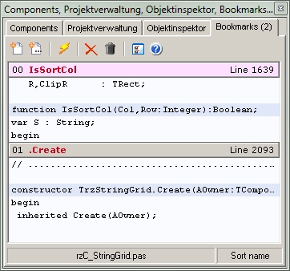

Editor BookmarksGeneral |
|
The "Editor Bookmarks" expert offers convenient ways to create, handle and use bookmarks. The expert has a dockable main window; this mode should also be the primary form of use. The expert complements the bookmark function available in the IDE and offers new ways to keep a good overview of the bookmarks set and to access them specifically. 
Bookmarks now can be set in three different ways: ▪As usual via the IDE (Bookmarks 0 ... 9). ▪The 1st toolbutton is used to set the first free bookmark for the caret position in the editor (Bookmarks 0 ... 19). Duplicate entry for the same line is prevented. ▪If specified in the options, this automatic function can be deactivated and the editor window known from earlier version will be called by the 1st toolbutton to optionally set any bookmark. ▪The 2nd toolbutton opens an additional window in which the position of the new bookmark can be set from a list of all functions and procedures of the active file in the IDE.
If enabled, the expert prevents the creation of duplicate bookmarks within a line. However, this is generally possible within the IDE (and in "Editor Bookmarks" Edit form).
▪If specified in the options, a 3rd toolbutton (as shown above) appears and let you modify an existing bookmark. ▪Using the toolbuttons with the red cross or the trash can symbol, individual or all existing bookmarks can be deleted.
▪Activated bookmarks are displayed in the listbox of the expert window. The header of each bookmark item contains its index, the name of the assigned function/procedure (a leading dot marks a class method) and the line number. ▪Below the header, an excerpt of the source text before and after the bookmark is shown, the bookmark line is highlighted. In the options, you can set whether 3 or 5 lines are shown at this point. ▪The file name of the source text file for which the bookmarks are set is displayed in the 1st panel of the statusbar. ▪By repeatedly clicking on the lightning symbol in the toolbar, the list can be sorted by the attributes BookmarkIndex, MethodName and LineNumber. The active sort mode is displayed in the 2nd panel of the statusbar.
|